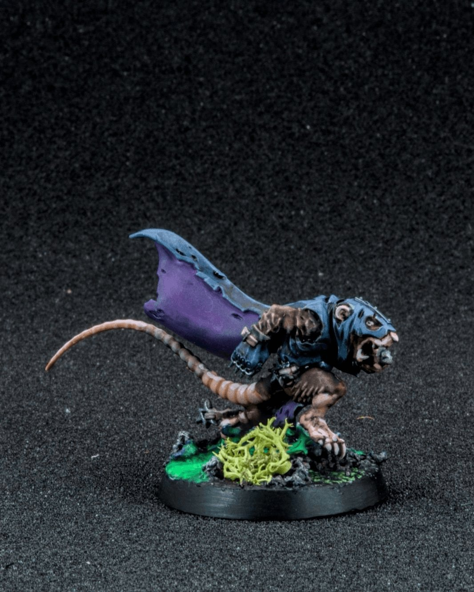
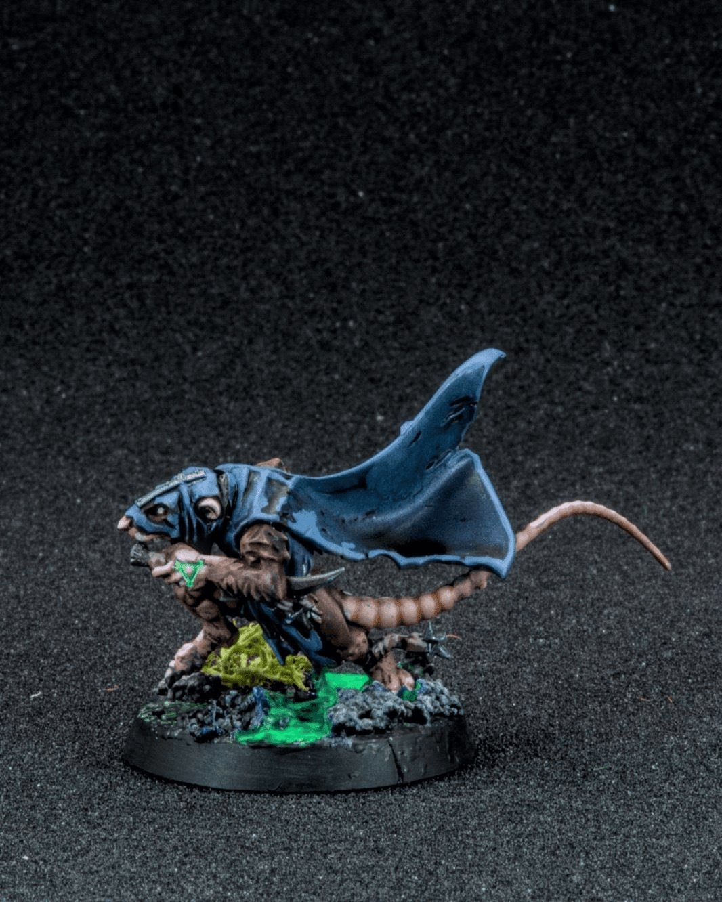
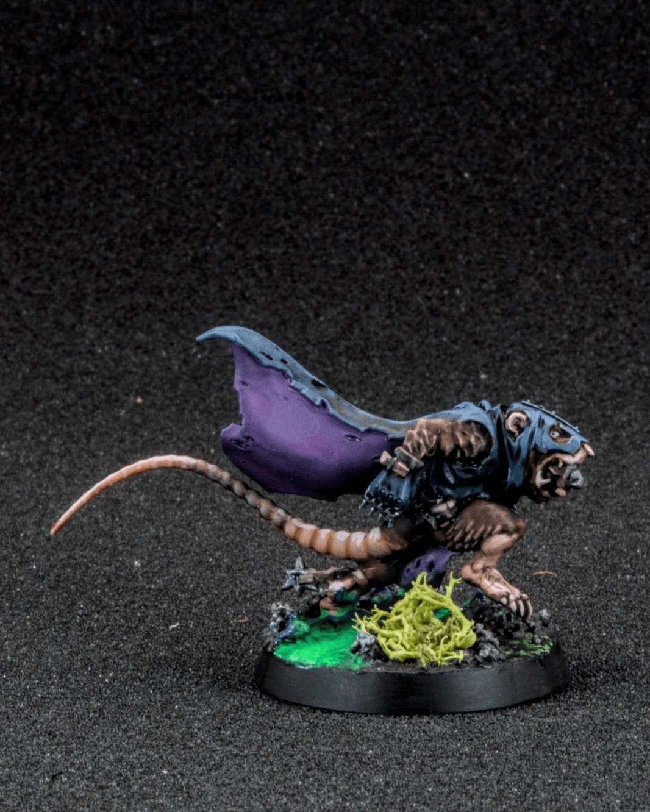
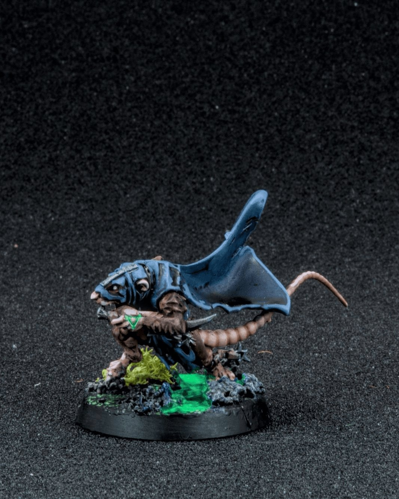
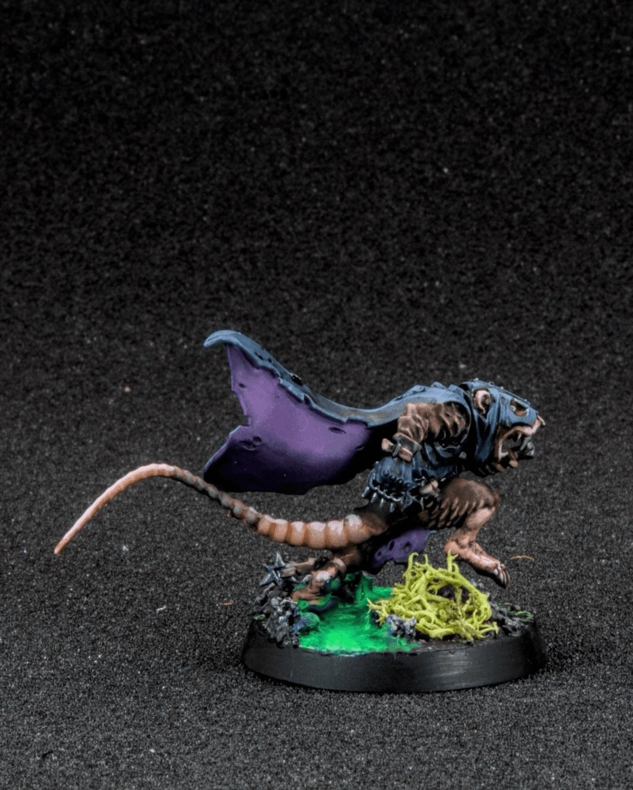
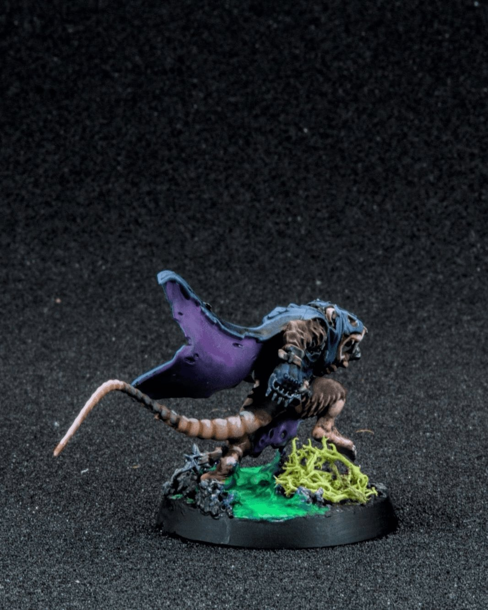

Skaven Gutter Runners
Silent in the tunnels… until it’s too late. 🐀
The Gutter Runners of the Skaven are the sneakiest rats in the Under-Empire, assassins and infiltrators trained by Clan Eshin to strike from the shadows. In Blood Bowl they bring that same energy to the pitch, darting through gaps in the line, stealing the ball, and vanishing before anyone realizes what happened. Compared to the rest of the ratmen they’re strangely… refined, which somehow makes them even more unsettling.
This one ended up with a look somewhere between stealth assassin and pickpocket at an S&M convention, which honestly feels very Skaven. The cloak was a mix of Army Painter Speedpaints for quick shading and Fanatics to push the highlights and saturation a bit further. I had a lot of fun with the base too, adding that eerie green glow so it looks like he’s skittering across something toxic in the tunnels. Always nice when the base tells a little story of its own.
#MiniaturePainting #BloodBowl #Skaven #Warhammer #Hobbies 🐀